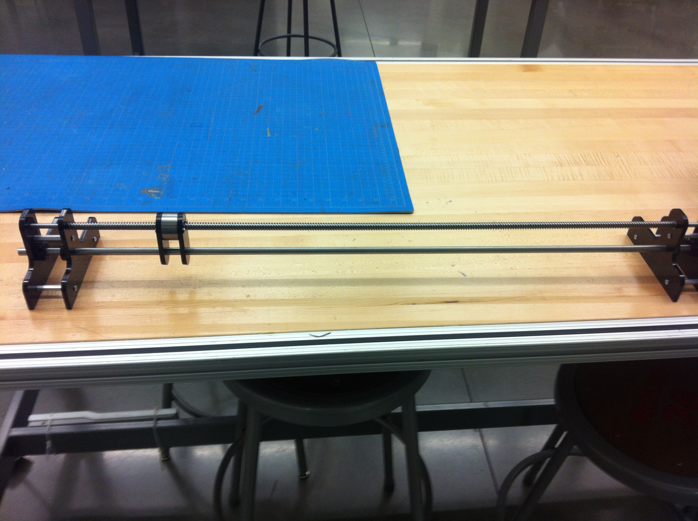
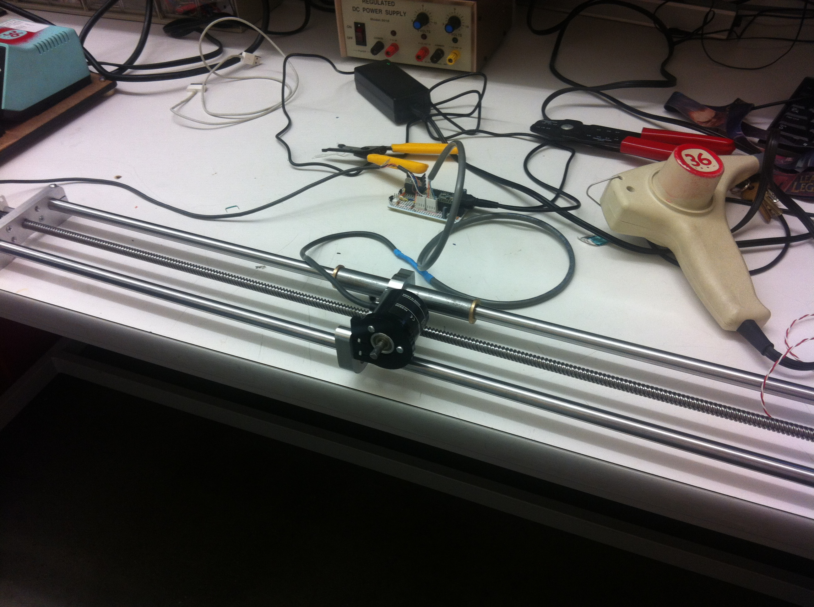
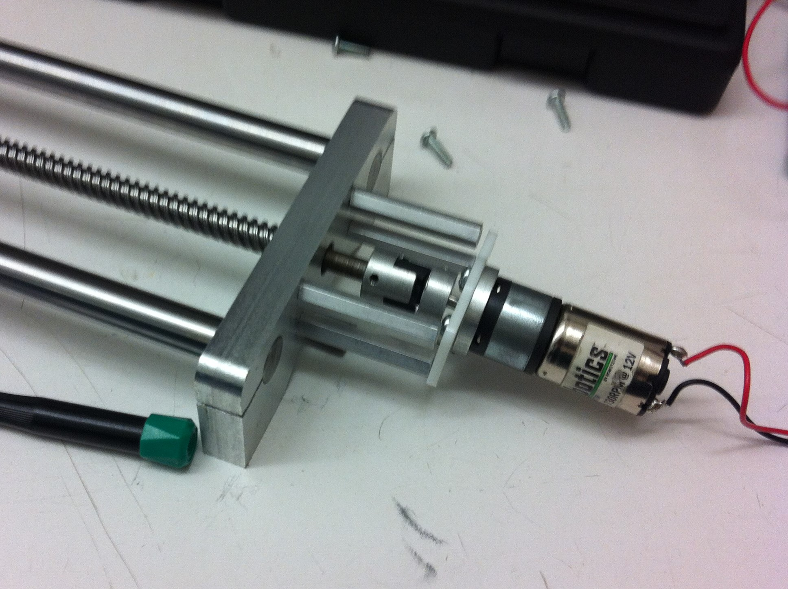
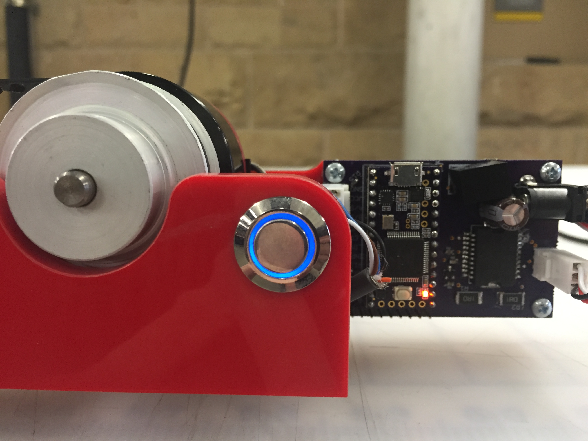
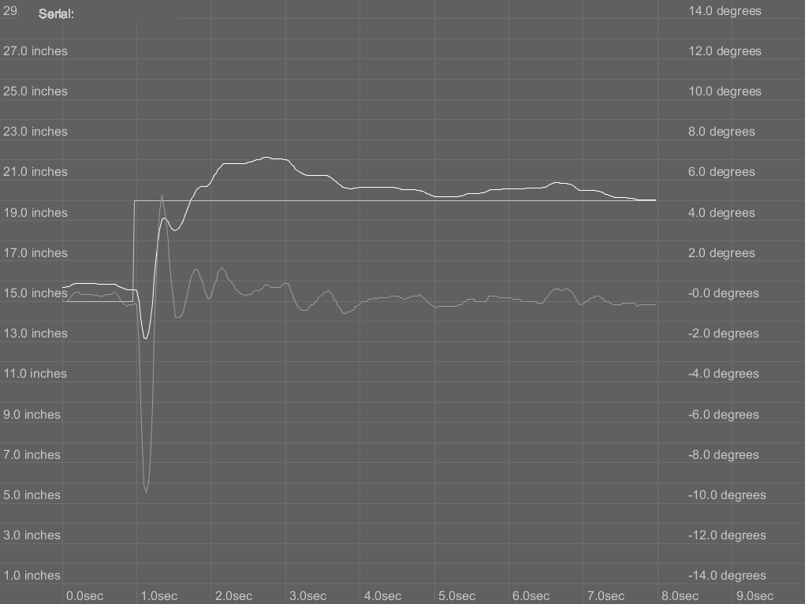

Balance
Created for Paul Mitiguy to inspire interest in active controls coursework
Balance has been presented for multiple years running in ME261: Vibrations and Dynamic Controls during the introduction of controls, to inspire the interest and engagement of students with the topic of dynamic controls. It is a real physical manifestaion of control systems doing a simple parameterized task with excellence.

Initial Design
Balance began as an effort to create an engaging and dynamic demonstration of controls for ME 261 at Stanford University. The main mechanical component of the inverted pendulum is a linear actuator, which this initial design attempted to create with minimal cost and effort. Unfortunately it was not stiff enough to provide smooth, non-binding motion.

Second Iteration
To combat issues with stiffness, I created a new design that I cut from half inch aluminum plate, and had two half inch precision steel rails to provide greater stiffness. This design ran much smoother, with very little vibration and a properly constrained set of linear bearings. This design was actually overdesigned for the given application, as it could tolerate forces well beyond the acceleration forces of an inverted pendulum.

Motor Design
The initial motor choice was a brushed DC gearmotor, driving a high pitch lead screw. The combination of high cogging torque and backlash in the gearhead ultimately made it a poor fit for this system. After a brief detour through stepper motors, a three phase brushless motor with a custom driver was chosen for its low cogging torque, high torque output and ability to function well at both extremely low and very high RPM.
Final Iteration
The final mechanical revision consisted of a belt driven linear cart, with a low KV brushless motor. The belt drive was chosen as an easy method of converting rotational into linear motion, as well as easily setting ratio of the RPM of the motor to the velocity of the slide. The linear stage is a purchased aluminum extrusion that is a good compromise between stiffness and cost.

Control Implementation
Controls for the entire system are implemented on a Teensy 3.1 in Arduino. Arduino was chosen for ease of development speed, and so that future students could see a controls implementation with the minutia of the embedded firmware abstracted out. I developed both the pendulum control loop and the sinusoidal commutation loop for the motor and spun a custom PCB in EAGLECAD that interfaces the Teensy with both the motor control circuitry and the input sensors.

Suplementary Software
I also wrote a live display for telemetry from the pendulum, so that the effects of changes to the control system could be easily seen as data. Pictured here is a step response to a change in the position setpoint. In addition, the software saves the telemetry as a spreadsheet for numerical analysis. Special thanks to Paul Mitiguy for all his help with this project and his willingness to give me units on nothing but faith.